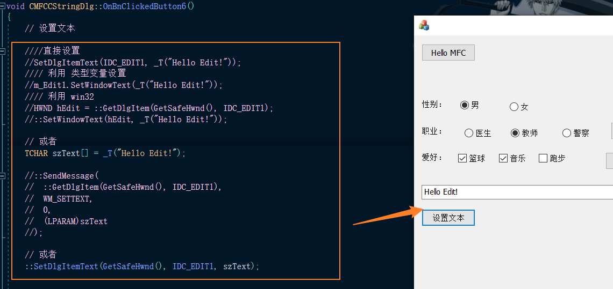
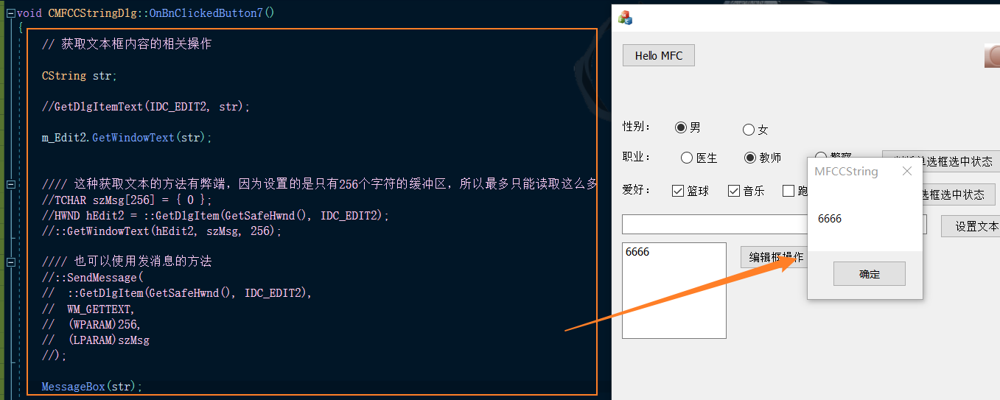
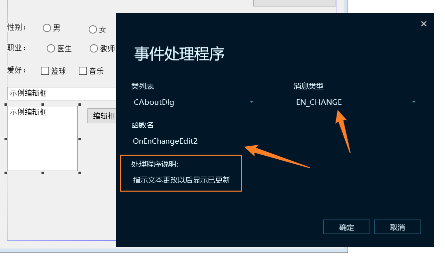
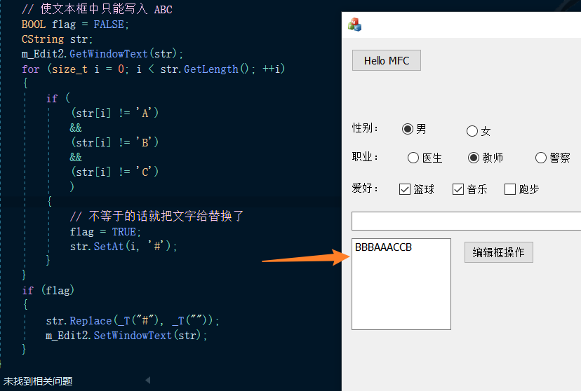
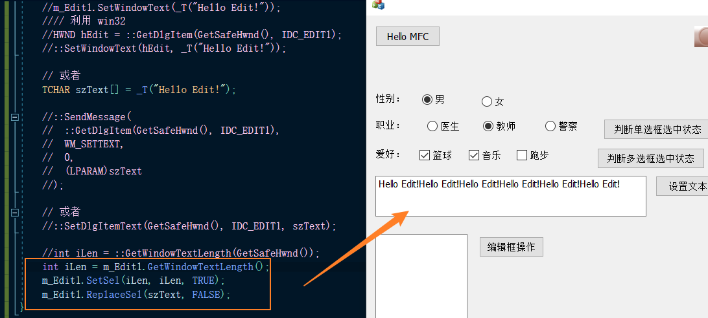
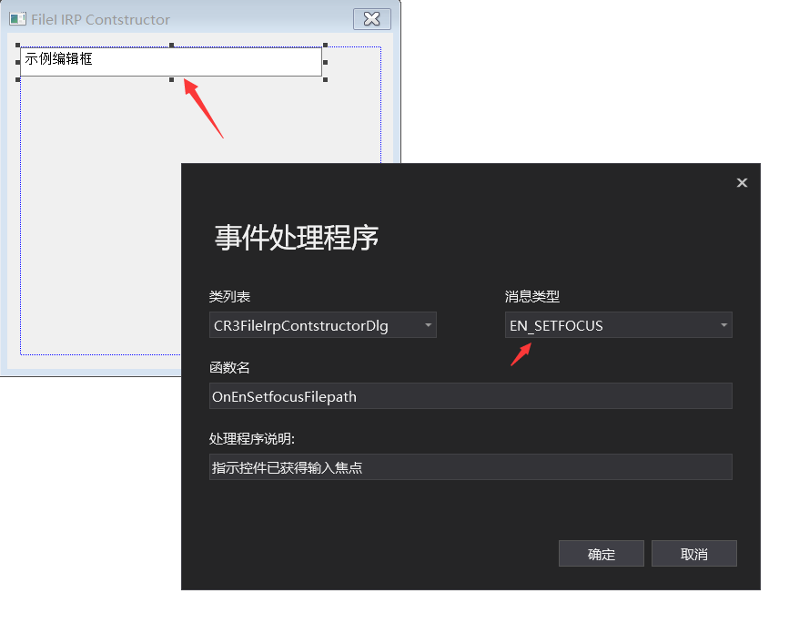
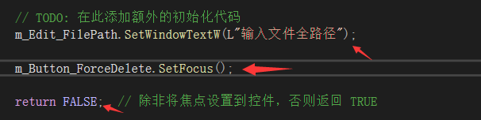
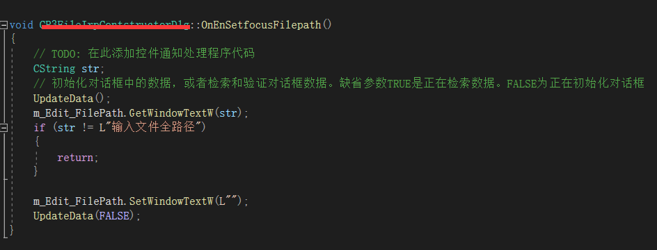
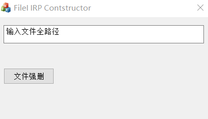
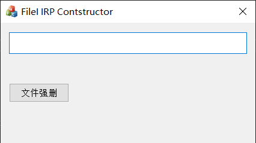

# Edit 控件
# 设置编辑框控件内的文本内容
这些方法哪一个都可以：

# 获取编辑框控件内的文本内容
这些方法都可以：

# 编辑框控件的属性介绍
a、让编辑框文本为只读模式；
b、让编辑框文本为密码模式；
d、让编辑框支持多行显示，即：自动换行；
e、让编辑框显示滚动条；
f、让编辑框只能接受数字输入；
g、让编辑框只能输入指定范围的数组；
以上这些属性都可以在编辑框的属性中设置。
但如果还有其他方面的限制要求，那只能是利用接下来要讲解的事件通知的方式来处理了。
# 事件通知
先认识两个消息事件。
EN_CHANGE : 当编辑框中的文本被修改，新的文本显示之 “后” 发送此消息EN_UPDATE : 当编辑框中的文本被修改，新的文本显示之 “前” 发送此消息
当编辑框内的文本内容发生变化时通知我，响应 EN_CHANGE 事件；
添加事件处理程序：

这是一个非常常用是消息事件，下面我们利用它来实现一些功能。

// 使文本框中只能写入 ABC | |
BOOL flag = FALSE; | |
CString str; | |
m_Edit2.GetWindowText(str); | |
for (size_t i = 0; i < str.GetLength(); ++i) | |
{ | |
if ( | |
(str[i] != 'A') | |
&& | |
(str[i] != 'B') | |
&& | |
(str[i] != 'C') | |
) | |
{ | |
// 不等于的话就把文字给替换了 | |
flag = TRUE; | |
str.SetAt(i, '#'); | |
} | |
} | |
if (flag) | |
{ | |
str.Replace(_T("#"), _T("")); | |
m_Edit2.SetWindowText(str); | |
} |
因为 SetWindowText 函数会触发 EN_CHANGE 消息，所以要加一个判断的标志，判断是否需要替换。
# 编辑框控件的长度限制
默认情况下编辑框控件的文本长度有限制，可以调用这个函数获取一下：
UINT nLimitLen = m_Edit.GetLimitText();
看到多少了吧？要解除这个限制呢，或者改成更大一些？
m_Edit.SetLimitText(0);
# 向编辑框的结尾增加数据
现在点击添加文本就会添加到已有文本的后面了。

# 始终显示最新的数据（光标定位到文本结尾）
我们发现向文本框中写入文本时光标一直在最前方，不合逻辑。
我们可以在每次输入完信息后，让光标定位到结尾。
m_Edit2.SetFocus(); | |
m_Edit2.SetSel(-1); |
在 EN_CHANGE 消息处理函数最后加入以上两行代码就行了。
# 使用编辑框打开文件资源管理器
这个涉及了 CFileDialog 类。
# 设置默认内容点击输入时默认内容消失
- 添加
EN_SETFOCUS事件：

- 在
OnInitDialog()中添加代码：

不知道为什么焦点首先聚集在编辑框中，于是我就手动设置了一下焦点，使其默认在一个按钮上了。
- 设置
EN_SETFOCUS事件响应函数：

效果：
点击编辑框之前：

点击编辑框之后：

# 拖拽文件使其在编辑框中显示文件路径
更改主窗口的属性：接受文件改为 TRUE
对主窗口右键选择类向导，添加消息
WM_DROPFILES的处理函数。
示例：
void CR3FileIrpContstructorDlg::OnDropFiles(HDROP hDropInfo) | |
{ | |
// TODO: 在此添加消息处理程序代码和 / 或调用默认值 | |
// | |
// 获得拖曳文件的文件名 | |
TCHAR szFilePath[MAX_PATH]; | |
DragQueryFile(hDropInfo, 0, szFilePath, MAX_PATH); | |
// 在编辑框中设置文件路径 | |
m_Edit_FilePath.SetWindowTextW(szFilePath); | |
// 拖放结束后，释放内存 | |
DragFinish(hDropInfo); | |
// CDialog::OnDropFiles(hDropInfo); | |
} |